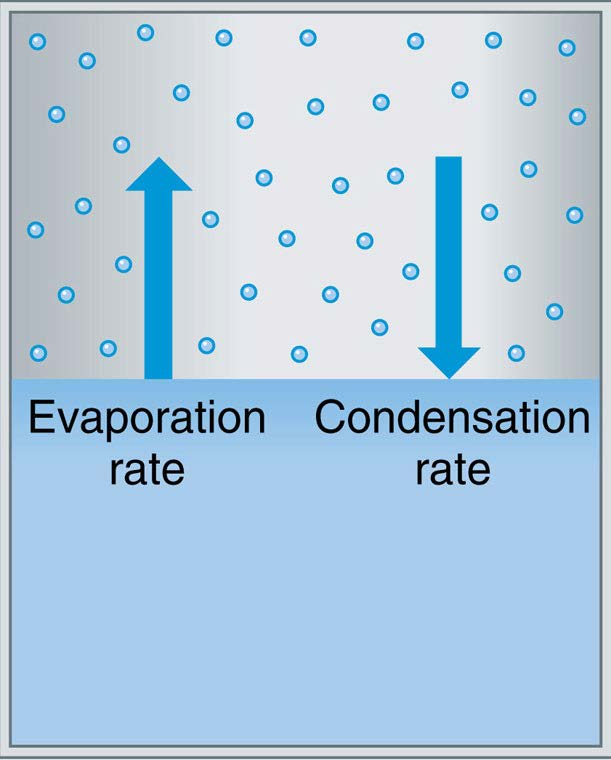

Worksheet 6 solution: Gibbs free energy#
Upload a scanned image with your answer
Question#
Starting with the definition of the Gibbs free energy on Thompkins p. 26
Use the first and second law to show that \(G\) is conserved for phase changes at constant temperature and pressure.
Approach#
Consider the cylinder on Thompkins p. 25:
{kind=link}

Fig. 1 Thompkins chamber#
Imagine that the top is a moveable piston, which can be slowly raised keeping the vapor pressure \(e_s(T)\) and the temperature \(T\) constant as water changes phase from liquid to vapor. How much heating is needed to do this, and how does it relate to the terms in (9)?
Solution#
Put in some numbers to get a concrete example. Assumptions:
total liquid water mass to start is 2 kg, with a volume of 2 l
total initial volume of the container is 3 l
The reference starting state is liquid water at the triple point temperature of 273.16 K
We are interested in a system that starts with 2 kg of liquid water at 283 K. We can use find_esat to get the saturation vapor pressure at this temperature.
Step 1: find esat#
from a405.thermo.thermlib import find_esat
from a405.thermo.constants import constants as c
temp=283
esat = find_esat(283)
print(f"{esat=:.0f} Pa")
esat=1215 Pa
Step 2: find the mass of vapor#
With a 3 l container, and 2 kg in liquid, that leaves 1 l = 0.001 \(m^3\) for the vapor.
Rv = 461 # J/kg/K
volume = 0.001 #m^3
rho_v = esat/(Rv*temp)
mass_v= 1/rho_v*volume
print(f"{mass_v=:.3f} kg")
mass_v=0.107 kg
To keep this simple, assume that we added in the missing 0.107 kg of liquid so that we have exactly 2 l of liquid again and 1 l of vapor. Make this the new reference state.
Step 3: Now change from this reference#
The system has total enthalpy \(H\), and total water mass \(M\). If we expand the container at constant temperature, we will evaporate liquid and will increase the enthalpy by \(l_v(T) \times m_v\) where \(m_v\) is the amount of new vapor created by the phase change. But this change required that we supply heat \(Q = T\Phi = l_v \times m_v\), so although the enthalpy has increased
stays the same.
Worksheet 7 (not for handin)#
Find the volume of liquid and vapor if we increase the container volume in this example from 3 l to 4 l. Why is this a tricky problem?